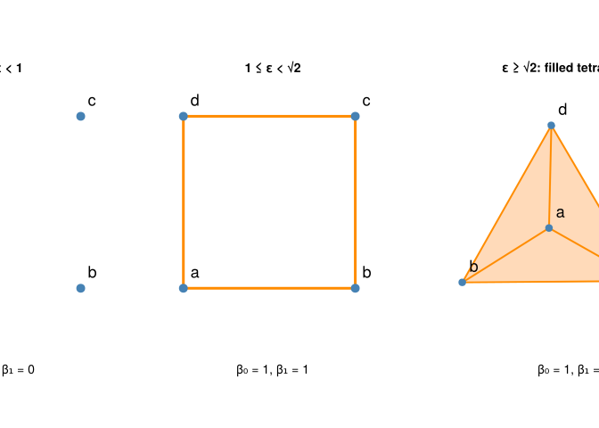
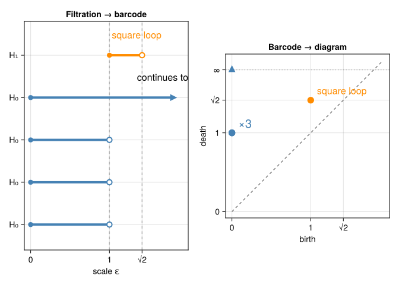

“We know, but cannot grasp, that above and below, beyond the limits of perception or imagination, thousands and millions of simultaneous transformations are at work.”
— Stanisław Lem, in Solaris
Our square has four components at small scales, one loop at intermediate scales, and no loop at large scales. Which answer is correct? All three describe the specified construction at their respective scales.
Persistent homology records the changes and the relationships between them. Instead of selecting a scale before looking, we follow classes across a filtration. We still need to choose the metric, filtration, coefficient field, and computational range.
7.1 Filtrations
Definition 7.1 A filtration is a nested family of complexes \((K_t)\), with
with each vertex entering at \(0\). Increasing \(t\) adds edges and the higher-dimensional simplices they determine. A finite metric space has only finitely many distinct pairwise distances, so there are finitely many changes.
Edges, triangles, and tetrahedra may enter at the same scale. An implementation orders tied simplices so that faces precede cofaces, but that auxiliary ordering should not be mistaken for a positive lifetime in the original scale parameter.
7.1.2 Other filtrations
A function \(f:X\to\mathbb R\) gives a sublevel-set filtration:
\[X_t=\{x:f(x)\leq t\}.\]
For vertex values on a fixed complex \(K\), set
\[F(\sigma)=\max_{v\in\sigma}f(v).\]
The resulting lower-star filtration includes a simplex when all its vertices have entered. On a triangulated space with a piecewise-linear function, it gives a computable model for sublevel-set topology. Images have related cubical constructions, which we will use in Computing persistent homology.
A filtration is a modeling choice: a Rips scale measures distance, an image threshold measures intensity, and a density filtration measures something else again. Their birth and death coordinates have different units and interpretations.
7.2 Following a class through the maps
Fix a dimension \(k\) and a coefficient field, here \(\mathbb F_2\). Inclusion \(K_s\hookrightarrow K_t\) sends a cycle to the same chain in the larger complex. It also sends boundaries to boundaries, so it induces a well-defined map
The notation looks unchanged, but the target class may now be zero: the larger complex may contain a filling that was absent before. These maps compose consistently: \(\phi_{s,u}=\phi_{t,u}\phi_{s,t}\) for \(s\leq t\leq u\). The vector spaces together with these maps form a persistence module.
For the square’s \(H_1\), the three distinct stages are
It has rank \(1\) and a three-dimensional kernel. For example, \([a]+[b]\), \([a]+[c]\), and \([a]+[d]\) map to zero. Individual vertex classes all map to the same surviving component class. Saying “three components die” is convenient shorthand for this algebraic merging.
When components with different birth times merge, the usual elder rule keeps the older component and ends the younger one’s bar. Here every component was born at \(0\), so there is no uniquely oldest vertex. A tie-breaking rule may name \(a\) or another vertex as the survivor; the interval multiset is unchanged. It does not make one corner of the square more important than the others.
More generally, the rank of
\[H_k^{s,t}=\operatorname{im}\phi_{s,t}\]
counts independent classes that were already present at \(s\) and still survive at \(t\). Betti numbers at separate levels alone do not provide these maps.
7.2.1 See the three complexes
The following computation uses four fixed points, with no randomness. We include the full range of square distances by setting the threshold to \(2\).
usingCairoMakieusingTDARipsererusingTDAPersistenceDiagramssquare_points = [(0.0, 0.0), (1.0, 0.0), (1.0, 1.0), (0.0, 1.0)]square_diagrams =ripserer(Rips(square_points; threshold =2.0); dim_max =1, modulus =2)@assertcount(isfinite, square_diagrams[1]) ==3@assertcount(i -> !isfinite(i), square_diagrams[1]) ==1@assertall(i ->birth(i) ==0&&death(i) ==1,filter(isfinite, square_diagrams[1]))@assertlength(square_diagrams[2]) ==1@assertbirth(only(square_diagrams[2])) ≈1@assertdeath(only(square_diagrams[2])) ≈sqrt(2)[[(birth(i), death(i)) for i in d] for d in square_diagrams]
┌ Warning: Found `resolution` in the theme when creating a `Scene`. The `resolution` keyword for `Scene`s and `Figure`s has been deprecated. Use `Figure(; size = ...` or `Scene(; size = ...)` instead, which better reflects that this is a unitless size and not a pixel resolution. The key could also come from `set_theme!` calls or related theming functions.
└ @ Makie ~/.julia/packages/Makie/UjJJY/src/scenes.jl:238

Figure 7.1: The square filtration: four points, a loop, and then a full simplex. The final panel draws a tetrahedral realization with new display coordinates; its filtration scale still comes from the original square distances. The tetrahedron includes its solid interior.
The numerical result should agree with our hand calculation. If it does not, inspect the metric, threshold, coefficient field, and package environment before inventing a geometric explanation.
7.3 Barcodes and persistence diagrams
A barcode summarizes an interval decomposition of a persistence module. An interval module \(I[b,d)\) is one copy of the field at each parameter \(b\leq t<d\), zero outside, with identity maps between its nonzero levels. It is the algebraic version of a feature’s lifetime.
For finite filtrations over a field, the module decomposes as
The intervals, including multiplicities, are uniquely determined even though the particular basis and representative cycles need not be. For finite filtration algorithms and their algebraic justification, see Zomorodian (Zomorodian 2005). More generally, real-indexed modules whose vector space at each parameter is finite-dimensional decompose into interval modules (Crawley-Boevey 2015). Arbitrary modules without such hypotheses need not have this description. The half-open convention here comes from including simplices at their entrance values in our finite filtration.
The persistence diagram instead places one point \((b,d)\) for each interval. It is a multiset, so our three copies of \((0,1)\) must not collapse into one feature merely because they overlap in a plot. The essential interval has death \(\infty\) and is displayed separately from finite deaths.
Draw and annotate the computed barcode and diagram
let fig =Figure(size = (1050, 420)) ticks = ([0.0, 1.0, sqrt(2)], ["0", "1", "√2"]) colors = [:steelblue, :darkorange] display_end =1.8 bar_ax =Axis(fig[1, 1], title ="Filtration → barcode", xlabel ="scale ε", xticks = ticks, yticks = (1:5, ["H₀", "H₀", "H₀", "H₀", "H₁"]))vlines!(bar_ax, [1.0, sqrt(2)]; color = (:gray, 0.5), linestyle =:dash) row =0for (k, diagram) inenumerate(square_diagrams)for interval insort(collect(diagram); by = i -> (isinf(death(i)), death(i))) row +=1 b, d =birth(interval), death(interval) right =isfinite(d) ? d : display_endlines!(bar_ax, [b, right], [row, row]; color = colors[k], linewidth =4)scatter!(bar_ax, [b], [row]; color = colors[k], markersize =12)ifisfinite(d)scatter!(bar_ax, [d], [row]; color =:white, strokecolor = colors[k], strokewidth =2, markersize =12)elsescatter!(bar_ax, [right], [row]; color = colors[k], marker =:rtriangle, markersize =16)endendendtext!(bar_ax, 1.35, 4.35; text ="continues to ∞", fontsize =16)text!(bar_ax, 1.03, 5.35; text ="square loop", color = colors[2], fontsize =16)limits!(bar_ax, -0.08, 2.0, 0.4, 5.8) diagram_ax =Axis(fig[1, 2], title ="Barcode → diagram", xlabel ="birth", ylabel ="death", aspect =DataAspect(), xticks = ticks, yticks = ([0.0, 1.0, sqrt(2), display_end], ["0", "1", "√2", "∞"]))lines!(diagram_ax, [0.0, 1.9], [0.0, 1.9]; color =:gray, linestyle =:dash)hlines!(diagram_ax, [display_end]; color = (:gray, 0.5), linestyle =:dot)for (k, diagram) inenumerate(square_diagrams)for interval in diagram b, d =birth(interval), death(interval)scatter!(diagram_ax, [b], [isfinite(d) ? d : display_end]; color = colors[k], markersize =16, marker =isfinite(d) ? :circle ::utriangle)endendtext!(diagram_ax, 0.08, 1.03; text ="×3", color = colors[1], fontsize =20)text!(diagram_ax, 1.08, sqrt(2) +0.05; text ="square loop", color = colors[2], fontsize =16)limits!(diagram_ax, -0.08, 2.0, -0.08, 2.0) figend
┌ Warning: Found `resolution` in the theme when creating a `Scene`. The `resolution` keyword for `Scene`s and `Figure`s has been deprecated. Use `Figure(; size = ...` or `Scene(; size = ...)` instead, which better reflects that this is a unitless size and not a pixel resolution. The key could also come from `set_theme!` calls or related theming functions.
└ @ Makie ~/.julia/packages/Makie/UjJJY/src/scenes.jl:238

Figure 7.2: One filtration, two summaries. Blue marks H₀ and orange marks H₁. The three finite H₀ bars overlap at the same diagram point, labeled ×3. Infinity is drawn at an arbitrary display position, not a measured death time. Closed birth markers and open death markers illustrate the half-open interval convention.
To recover a Betti number at scale \(t\), count bars satisfying \(b\leq t<d\). At \(t=1.2\), this gives one \(H_0\) bar and one \(H_1\) bar. At \(t=\sqrt2\), the loop’s bar has ended, so \(\beta_1=0\). Endpoints matter!
7.3.1 Essential versus unobserved deaths
An essential interval survives for the rest of the specified filtration. The square has one such ordinary \(H_0\) interval: its final full simplex is connected.
A computational threshold can also produce an infinite death in the returned diagram. If we stop the square filtration at \(1.2\), the loop has not yet died; software may report \([1,\infty)\). We know from the full calculation that it actually dies at \(\sqrt2\). In that truncated computation, infinity means death not observed within the range, rather than evidence of an eternal hole.
Check the filtration’s threshold and diagram metadata when interpreting infinite intervals. Different numbers of infinite intervals can also make diagram distances infinite; replacing that distance by a convenient finite constant changes the mathematics. We revisit this issue in Comparing shapes.
7.3.2 Lifetime is not significance
For a finite interval, persistence is \(d-b\). Long bars represent classes surviving across a wide range of the selected filtration parameter. That is useful, but “long” depends on units, scaling, and the chosen filtration.
A long bar can arise from an outlier, a sampling bias, or a poor metric. A short bar can describe a real small feature. Neither length nor distance from the diagonal, by itself, supplies a statistical significance test. Compare perturbations and suitable null models, and connect the feature to the scientific question. The uncertainty chapter develops these distinctions.
7.4 Bottleneck distance
For finite diagram points, a matching may pair points from two diagrams or send a point to the diagonal \(\Delta=\{(u,u):u\in\mathbb R\}\). Add arbitrarily many diagonal copies so diagrams with different numbers of finite features can still be matched. Then
where \(\gamma\) ranges over these matchings. This is the smallest possible largest displacement.
The cheapest diagonal match for \((b,d)\) uses \(((b+d)/2,(b+d)/2)\) and costs \((d-b)/2\). Our square’s finite \(H_1\) point therefore has distance
\[\frac{\sqrt2-1}{2}\approx0.2071\]
from the empty diagram. An empty diagram is a valid summary; we do not need to assign it an arbitrary comparison value.
Essential points with infinite death cannot be matched to the finite diagonal at finite cost. They must be matched to compatible essential points, with their birth difference determining the cost. If the essential counts differ, the usual extended bottleneck distance is infinite. Specify how essential or truncated intervals are handled before comparing diagrams.
A zero diagram distance does not imply that the original datasets are identical. Diagram distance is a metric on suitable diagram spaces, but only a pseudometric on datasets after applying a summary that can send different datasets to the same diagram.
7.5 Clustering revisited: single linkage and \(H_0\)
At a Rips scale \(t\), two points belong to the same component if a path of edges of length at most \(t\) joins them. This is exactly the partition produced by single-linkage hierarchical clustering at threshold \(t\).
The correspondence does not hold for arbitrary hierarchical methods. Complete linkage and average linkage use different merge rules; they do not simply take connected components of the threshold graph.
A labeled dendrogram records which groups of points merge. The \(H_0\) barcode records their birth and death scales, with multiplicities, but omits those memberships and much of the merge-tree structure. It is therefore a summary of the single-linkage process, rather than a dendrogram with all information preserved. Ties may be resolved differently in a binary drawing while producing the same partitions at each distinct scale.
For our square, all four components join at \(1\), giving three finite bars ending there. The barcode tells us the merge scale, but does not identify which square edges were used to form a spanning tree. Also, a long chain of short edges can connect distant regions: the familiar single-linkage chaining effect remains present in \(H_0\) persistence.
7.6 Two stability statements
Stability bounds changes in the summary under specified changes in the input. The bound depends on what input and filtration we use.
7.6.1 Perturbing a function on the same space
For tame continuous real-valued functions \(f,g\) on the same triangulable space, with the same coefficient field, sublevel-set persistence satisfies (Cohen-Steiner et al. 2007)
Finite piecewise-linear functions on a finite complex give a concrete setting where the required finiteness conditions hold. If every function value changes by at most \(\delta\), every sublevel set for \(f\) at \(t\) lies inside the sublevel set for \(g\) at \(t+\delta\), and conversely. This explains why birth and death scales can be controlled by that shift.
7.6.2 Perturbing a finite point cloud
For finite point clouds \(X,Y\) in the same ambient metric space, Rips persistence with our diameter convention satisfies (Chazal et al. 2014)
where \(d_H\) is the Hausdorff distance: the largest distance required to find a nearby point in the other set. A more general statement uses \(2d_{GH}(X,Y)\) for finite metric spaces without a shared ambient space.
The factor two has a geometric reason. If each endpoint of a pair can move by at most \(\delta\), its pairwise distance can change by as much as \(2\delta\). A Rips simplex at scale \(t\) can therefore be compared with one at scale \(t+2\delta\). For example, moving every square corner by at most \(0.01\) bounds the diagram change by \(0.02\) under the stated metric assumptions.
These are bounds for the full specified filtrations. Independently truncating computations can conceal matching deaths, so an infinity in a limited output requires care. Stability is also not a guarantee that a sampled cloud recovers the topology of an unknown underlying object. It controls sensitivity to perturbation, not scientific truth or statistical significance.
7.7 What we have gained
We can now follow classes rather than merely count them at isolated scales. The square’s single loop gives the interval \([1,\sqrt2)\); its components give three finite intervals and one essential interval. Barcodes and diagrams record the same interval data, and stability tells us how that data responds to certain input changes.
In the next chapter, we will compute less toy-like examples in Julia. Keep the square nearby as a sanity check: it is small enough that we do not have to trust either the computer or the author blindly.
7.8 Stop and predict
At scales \(0.9\), \(1\), and \(\sqrt2\), what are the square’s \(\beta_0\) and \(\beta_1\)? Why does the answer at the endpoint matter?
NoteAnswer: count half-open bars
At \(0.9\), \((\beta_0,\beta_1)=(4,0)\). At \(1\), the three finite component bars have ended and the loop bar has begun, giving \((1,1)\). At \(\sqrt2\), the loop bar ends, giving \((1,0)\). The interval \([b,d)\) includes its birth and excludes its death.
You stop the computation at \(1.2\) and see \([1,\infty)\) in \(H_1\). Can you conclude that the loop never fills? What is its bottleneck distance to the empty diagram using the full calculation?
NoteAnswer: a cutoff is not a death theorem
The limited computation only establishes survival through \(1.2\). The full square filtration kills the class at \(\sqrt2\). Its finite full diagram point can be matched to the diagonal for \((\sqrt2-1)/2\approx0.2071\). A truncated infinite interval cannot simply be used as if its actual death were known.
Each square corner moves at most \(0.01\) in Euclidean distance. What Rips bottleneck bound follows? Does that make its loop statistically significant?
NoteAnswer: robustness and significance answer different questions
The Hausdorff distance is at most \(0.01\), giving \(d_B\leq0.02\) under our diameter convention. This bound concerns sensitivity to the specified perturbation. Significance requires a sampling or null model and a relevant scientific interpretation; the stability inequality alone does not provide either.
Chazal, Frédéric, Vin de Silva, and Steve Oudot. 2014. “Persistence Stability for Geometric Complexes.”Geometriae Dedicata 173: 193–214. https://doi.org/10.1007/s10711-013-9937-z.
Cohen-Steiner, David, Herbert Edelsbrunner, and John Harer. 2007. “Stability of Persistence Diagrams.”Discrete & Computational Geometry 37 (1): 103–20. https://doi.org/10.1007/s00454-006-1276-5.
Crawley-Boevey, William. 2015. “Decomposition of Pointwise Finite-Dimensional Persistence Modules.”Proceedings of the American Mathematical Society 143: 555–65. https://arxiv.org/abs/1210.0819.